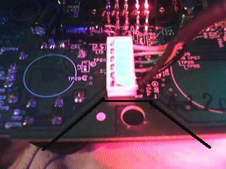

What you will need:
1. Submini Pushbutton Switch: Radio Shack Part# 275-1571
2. Wire - .32 guage/Wirewrap wire - I used the wire from an ATA-66 IDE Cable
3. Solder (Rosin Core) - Thin
4. Soldering Pensil - 15/20 Watt
6. Phillips Screwdriver (Smaller shaft to fit in Controller holes)
7. Drill & Bit (I used a Torx-20 to ream the hole out, then another Phillips Driver to ream out the rest)
8. Patience! Take your time and do it right.
If you are using an Original (large) xbox controller, the instructions for the switch mounting are slighly different, and are included. When you get to Step 10, go down and look at the drill/mount instructions for the regular controller.
STEPS:
1. Open the Xbox console (voiding your warranty).
2. Unplug the yellow connector that has ten yellow wires that come from the front panel, to the plug. This is the plug in the bottom of the picture. They are all roughly in the same spot on all the other motherboards. There are only 10 pins on the plug. The other 12-pin plugs you will see on the V1.2 and up, are the USB controller connectors.
V1.0 - 1.1 V1.2 - 1.5 V1.6+


The pin at the bottom left of the 10-pin plug is the Power Sense pin. The second one over is Eject.
3. Choose which port you will use the modified controller in, and disconnect it's yellow wire from the mainboard or usb daugter board (V1.0). In the picture below, is a V1.0-1.1 with the USB daughter board. Controller ports one and two are on the left side. I used port #2. You can see two black objects in the picture. The one on the right is controler port #2.
V1.0 V1.1-V1.5 V1.6+
4. On that header with the ten yellow wires, the wire to the bottom left is the power button lead. Solder the yellow wire from your chosen port onto that yellow wire. You can strip back some wire, or cut and spice them all together. Do not use the second on over from the bottom left, that is the Eject wire. Or, if you can, follow where the the yellow wires go to the pannel. Solder the yellow wire to the second solder point up from the bottom. I spliced mine in with the actual wire from the plug.
5. Verify connectivity on wires, then plug the header back in, and reassemble the Xbox console.
6. Open up the controller you wish to modify.
7. Find a nice place to mount your new button (on the back near the middle is good), somewhere where you wont bump it accidentally. Make sure it will fit under the plastic and still fit back together afterwards! You can remove the rumble motors and put the button up through the top as well.
8. Disconnect the yellow wire from the controller, and connect it to one of the terminals of the button, you may need to extend the wire to it.
The yellow wire is the 4th one down from the top: RED-LTGRY-DRKGRY-YLW-BLK-SHIELD:

9. Connect a length of wire from the other terminal of the button to ground. This would be the sheath (shield) or black wire of the controller cable. On the opposite side of the board from the above picture, there are two ground points at the BOTTOM:
10. Drill a hole and mount the button by however is necessary (glue etc). I chose the center screw on the bottom shell. I drilled the center screw point on the controller:
11. Reassemble the controller and plug it into the modified port on the Xbox and test your button!